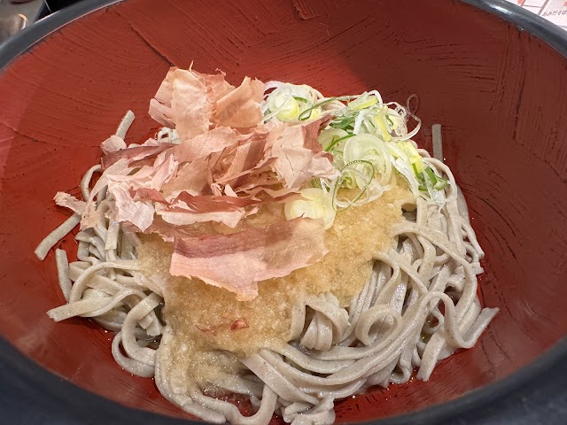
| 営業時間 | 月・火・水・木・金・土・日 11:00〜22:30 |
|---|---|
| 定休日 | なし(要最終確認) |
| 住所 | 福井県福井市中央１丁目３−５ FUKUMACHI BLOCK 1F MINIE |
| 予約 | 要確認 — 公式サイト |
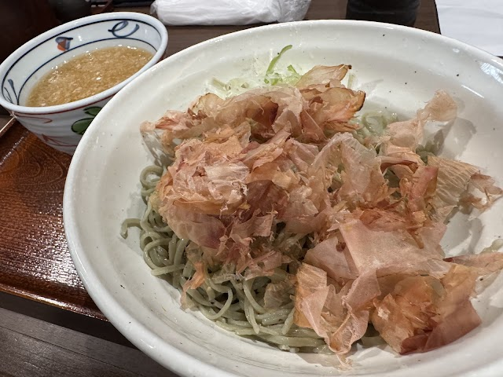
| 営業時間 | 月・火・水・木・金・土 11:00〜20:00 |
|---|---|
| 定休日 | 日曜 |
| 住所 | 福井県福井市順化１丁目１１−３ |
| 予約 | 可 — ☎ 0776-23-3448 ／ 公式サイト |
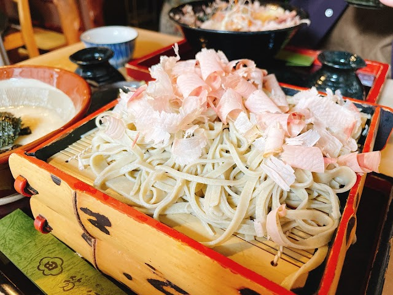
| 営業時間 | 月・水・木・金・土・日 11:00〜20:00 |
|---|---|
| 定休日 | 火曜 |
| 住所 | 福井県福井市足羽４丁目５−１０ |
| 予約 | 可 — ☎ 0776-36-0476 ／ 公式サイト |
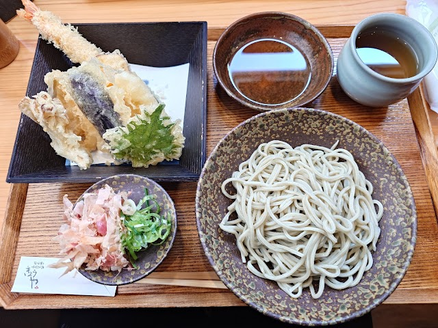
| 営業時間 | 月・水・木・金 11:00〜15:00 ／ 土・日 11:00〜15:00, 17:00〜20:00 |
|---|---|
| 定休日 | 火曜 |
| 住所 | 福井県福井市和田中２丁目９３６−２ |
| 予約 | 要確認 — ☎ 0776-25-1662 ／ 公式サイト |
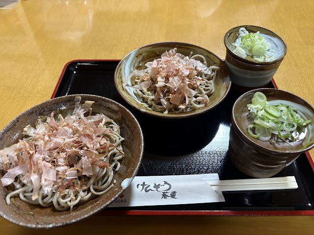
| 営業時間 | 火・水・木・金 11:00〜14:00 ／ 土・日 11:00〜15:00 |
|---|---|
| 定休日 | 月曜 |
| 住所 | 福井県吉田郡永平寺町松岡春日３丁目26−２６ |
| 予約 | 要確認 — ☎ 0776-61-1481 ／ 公式サイト |
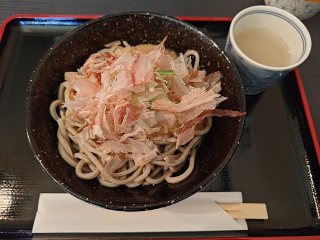
| 営業時間 | 火・水・木・金 11:00〜14:00 ／ 土・日 11:00〜15:00 |
|---|---|
| 定休日 | 月曜 |
| 住所 | 福井県越前市粟田部町２６−２０ |
| 予約 | 要確認 — ☎ 0778-42-0216 ／ 公式サイト |
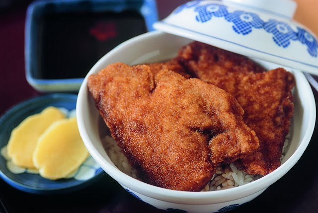
| 営業時間 | 水・木・金・土・日 11:00〜19:50 |
|---|---|
| 定休日 | 月・火曜 |
| 住所 | 福井県福井市順化１丁目７−４ |
| 予約 | 要確認 — ☎ 0776-21-4681 ／ 公式サイト |
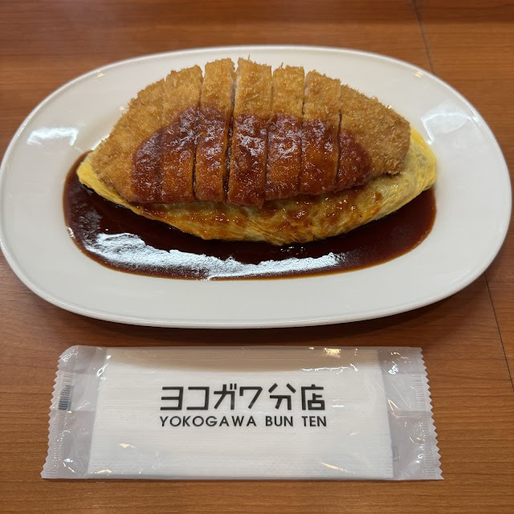
| 営業時間 | 月・水・木・金・土・日 11:30〜15:30, 17:30〜22:00 |
|---|---|
| 定休日 | 火曜 |
| 住所 | 福井県越前市京町１丁目４−３５ |
| 予約 | 可 — ☎ 0778-22-7172 ／ 公式サイト |
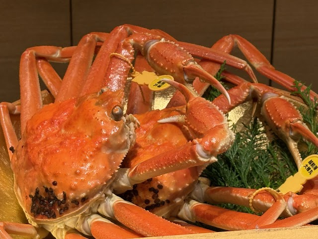
| 営業時間 | 月・火・木・金・土・日 11:00〜13:30, 17:00〜21:00 |
|---|---|
| 定休日 | 水曜 |
| 住所 | 福井県福井市中央１丁目２−１ |
| 予約 | 可 — ☎ 0776-50-2901 ／ 公式サイト |
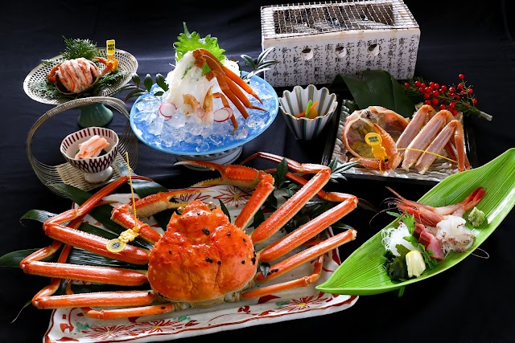
| 営業時間 | 月・火・水・木・金・土・日 11:30〜14:00, 17:30〜22:00 |
|---|---|
| 定休日 | なし(要最終確認) |
| 住所 | 福井県福井市順化２丁目１２−１２ |
| 予約 | 可 — ☎ 0776-21-3087 ／ 公式サイト |
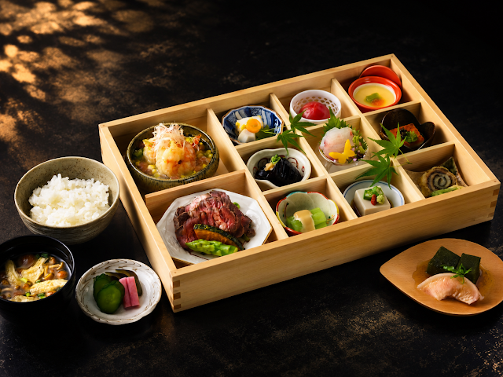
| 営業時間 | 月・火・水・木・金・土 11:30〜14:00, 17:30〜22:00 |
|---|---|
| 定休日 | 日曜 |
| 住所 | 福井県福井市中央３丁目９−２１ |
| 予約 | 可 — ☎ 0776-23-1009 ／ 公式サイト |
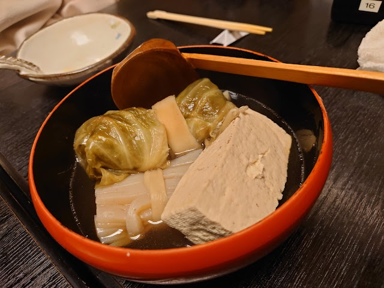
| 営業時間 | 月・火・水・木・金・土 11:00〜14:00, 17:00〜22:00 |
|---|---|
| 定休日 | 日曜 |
| 住所 | 福井県福井市日之出１丁目１７−２０ |
| 予約 | 可 — ☎ 0776-22-4817 ／ 公式サイト |
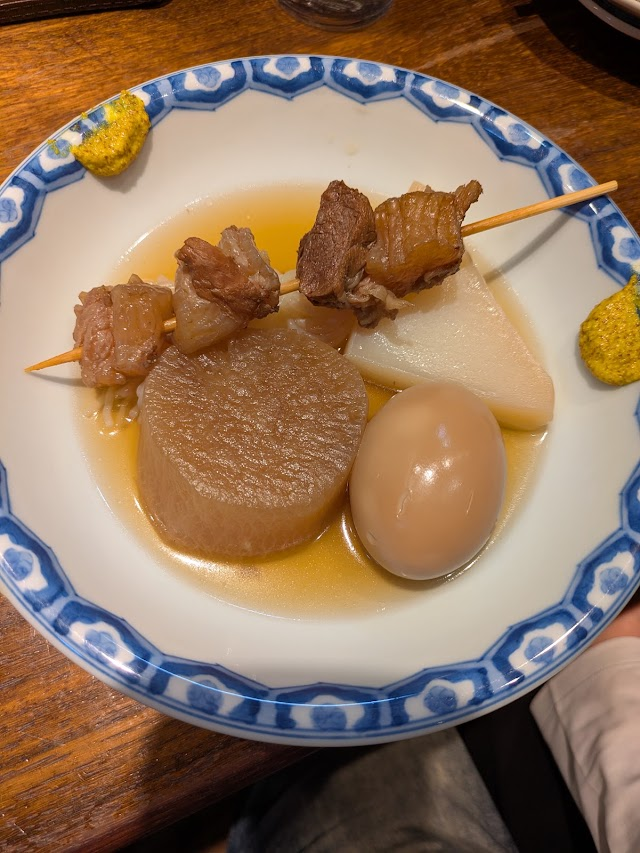
| 営業時間 | 火・水・木・金・土・日 12:00〜0:00 |
|---|---|
| 定休日 | 月曜 |
| 住所 | 福井県福井市中央１丁目２−１ |
| 予約 | 要確認 — ☎ 0776-28-2502 |
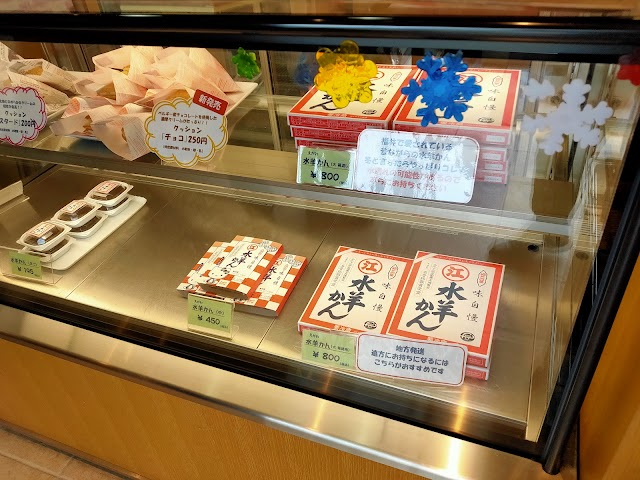
| 営業時間 | 月・火・木・金・土 8:30〜17:00 |
|---|---|
| 定休日 | 水・日曜 |
| 住所 | 福井県福井市照手３丁目６−１４ |
| 予約 | 要確認 — ☎ 0776-22-4952 ／ 公式サイト |
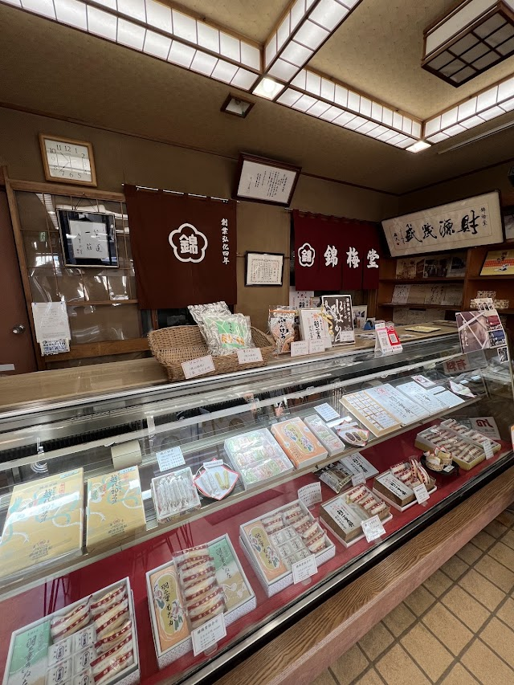
| 営業時間 | 月・火・水・木・金・土・日 8:00〜18:00 |
|---|---|
| 定休日 | なし(要最終確認) |
| 住所 | 福井県福井市順化１丁目７−７ 錦梅堂 |
| 予約 | 要確認 — ☎ 0776-24-0383 ／ 公式サイト |
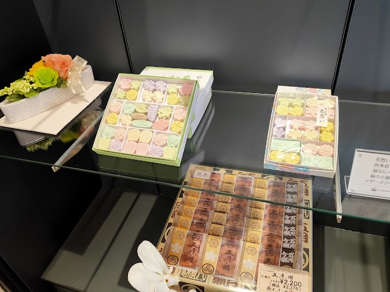
| 営業時間 | 月・火・水・木・金・土・日 9:00〜17:30 |
|---|---|
| 定休日 | なし(要最終確認) |
| 住所 | 福井県福井市中央３丁目５−１９ |
| 予約 | 要確認 — ☎ 0776-22-4400 ／ 公式サイト |
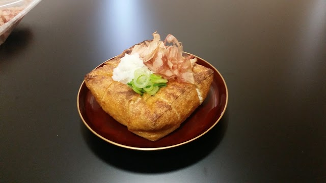
| 営業時間 | 月・火・水・木・金・土・日 8:00〜17:00 |
|---|---|
| 定休日 | なし(要最終確認) |
| 住所 | 福井県福井市問屋町２丁目１０ |
| 予約 | 要確認 — ☎ 0776-23-1648 ／ 公式サイト |
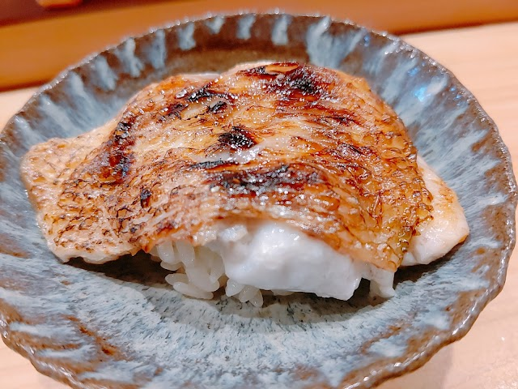
| 営業時間 | 月・火・水・木・金・土 12:00〜14:00, 18:30〜21:00 |
|---|---|
| 定休日 | 日曜 |
| 住所 | 福井県福井市文京５丁目１７−５ |
| 予約 | 可 — ☎ 0776-24-3080 ／ 公式サイト |
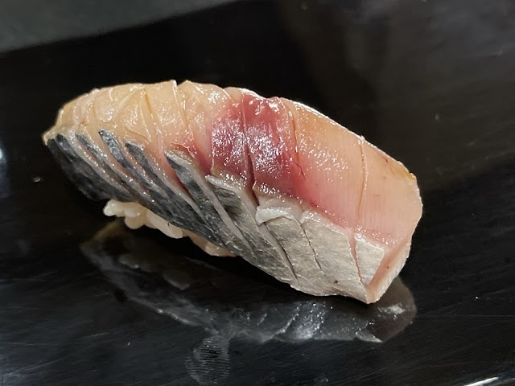
| 営業時間 | 月・火・水・木・金・土 17:00〜23:00 |
|---|---|
| 定休日 | 日曜 |
| 住所 | 福井県福井市順化１丁目１０−２ |
| 予約 | 可 — ☎ 050-5871-3498 ／ 公式サイト |
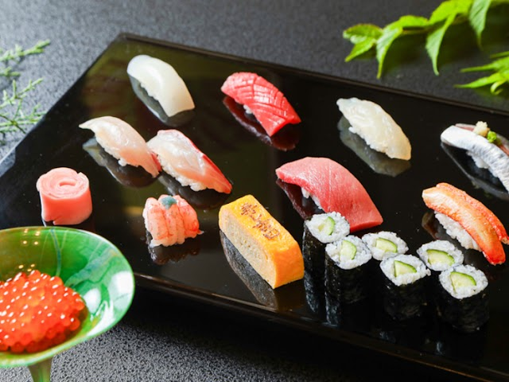
| 営業時間 | 月・火・水・木・金・土 17:00〜22:00 |
|---|---|
| 定休日 | 日曜 |
| 住所 | 福井県福井市順化１丁目１１−１５ |
| 予約 | 可 — ☎ 0776-23-1066 ／ 公式サイト |
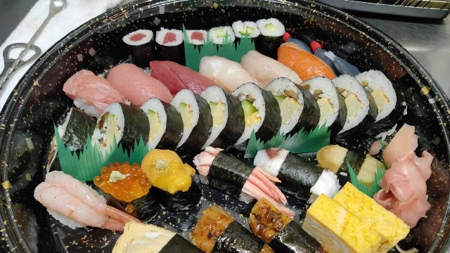
| 営業時間 | 月・火・水・木・金・土 17:30〜21:00 |
|---|---|
| 定休日 | 日曜 |
| 住所 | 福井県福井市中央２丁目６−４ |
| 予約 | 可 — ☎ 0776-22-1810 ／ 公式サイト |
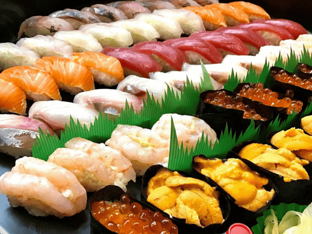
| 営業時間 | 月・火・水・木・金・土 11:00〜14:00, 17:00〜22:30 |
|---|---|
| 定休日 | 日曜 |
| 住所 | 福井県福井市みのり２丁目３−１２ |
| 予約 | 可 — ☎ 0776-36-7017 ／ 公式サイト |
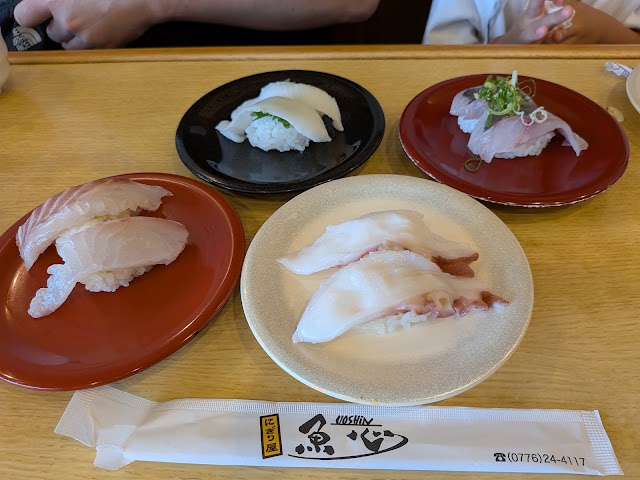
| 営業時間 | 月・火・水・金 11:00〜14:00, 18:00〜21:00 ／ 土・日 17:00〜21:00 |
|---|---|
| 定休日 | 木曜 |
| 住所 | 福井県福井市文京６丁目２３−２３０２ にぎり屋魚心 |
| 予約 | 要確認 — ☎ 0776-24-4117 ／ 公式サイト |
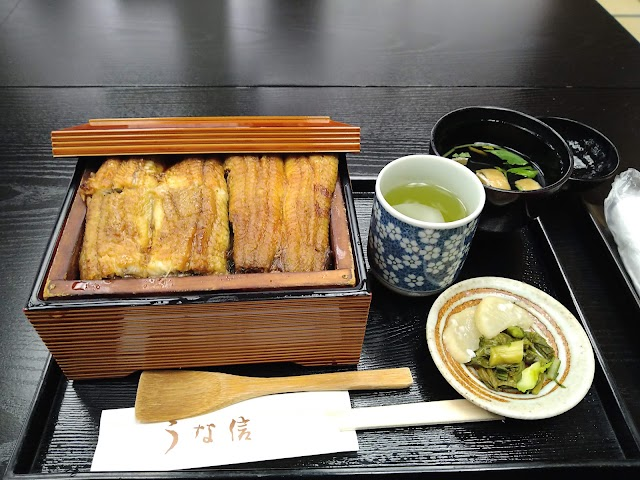
| 営業時間 | 火・木 11:00〜14:00 ／ 水・金・土・日 11:00〜14:00, 17:00〜19:30 |
|---|---|
| 定休日 | 月曜 |
| 住所 | 福井県福井市毛矢１丁目７−２２ |
| 予約 | 可 — ☎ 0776-35-2220 ／ 公式サイト |
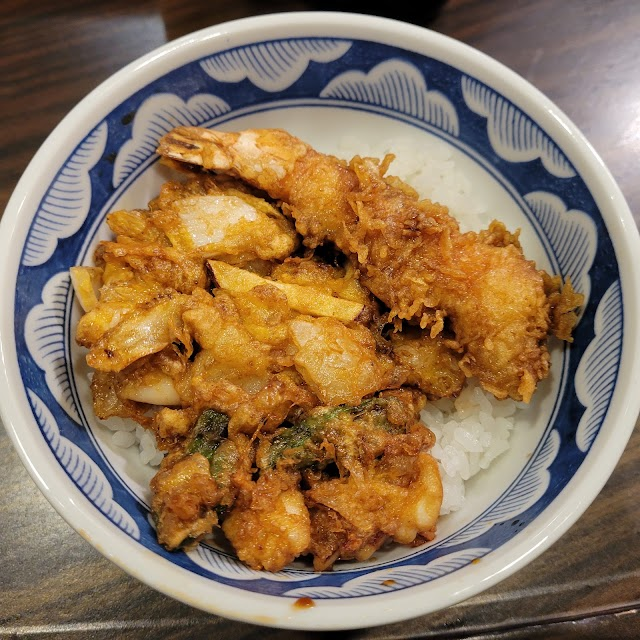
| 営業時間 | 月・木 17:30〜20:00 ／ 火・金・土 11:30〜13:00, 17:30〜20:00 ／ 水 11:30〜13:00 |
|---|---|
| 定休日 | 日曜 |
| 住所 | 福井県福井市順化１丁目１４−４ |
| 予約 | 可 — ☎ 0776-27-4628 |
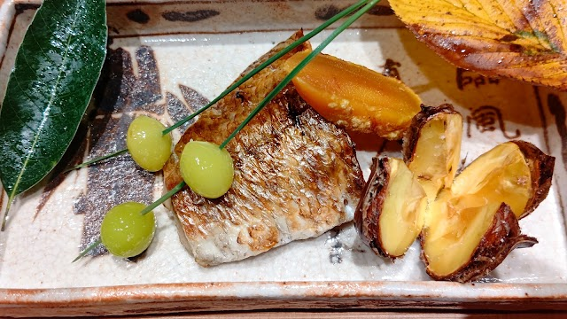
| 営業時間 | 月・火・水・木・金・土 18:00〜23:00 |
|---|---|
| 定休日 | 日曜 |
| 住所 | 福井県福井市春山２丁目１−７ |
| 予約 | 可 — ☎ 050-5870-3162 ／ 公式サイト |
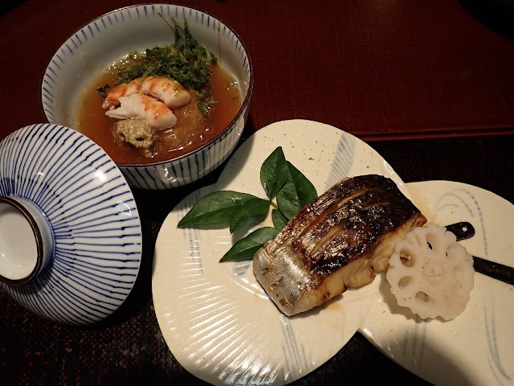
| 営業時間 | 月・火・水・木・金・土 11:30〜13:30, 18:00〜21:00 |
|---|---|
| 定休日 | 日曜 |
| 住所 | 福井県福井市中央３丁目１４−１１ |
| 予約 | 可 — ☎ 0776-25-4686 |
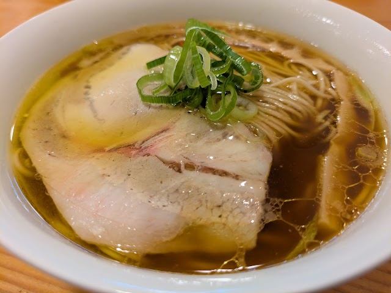
| 営業時間 | 月・水・木・金・土・日 11:00〜14:00, 18:00〜21:00 |
|---|---|
| 定休日 | 火曜 |
| 住所 | 福井県福井市渕４丁目２０７−２０７ 社中央ビル |
| 予約 | 要確認 — 公式サイト |
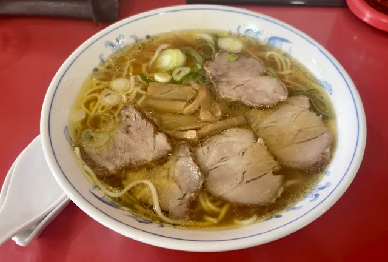
| 営業時間 | 月・火・水・木・金・土 11:30〜15:00 |
|---|---|
| 定休日 | 日曜 |
| 住所 | 福井県福井市板垣２丁目１４２９ |
| 予約 | 要確認 — ☎ 0776-33-3791 ／ 公式サイト |
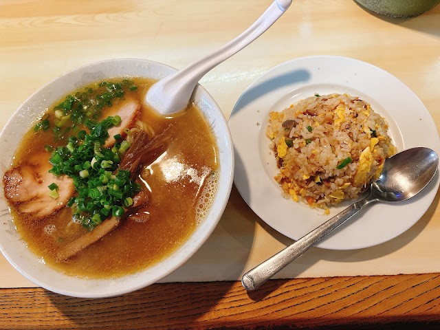
| 営業時間 | 火・水・木・金・土・日 11:00〜14:30, 17:00〜20:00 |
|---|---|
| 定休日 | 月曜 |
| 住所 | 福井県福井市乾徳２丁目５−６ |
| 予約 | 要確認 — ☎ 0776-27-5102 ／ 公式サイト |
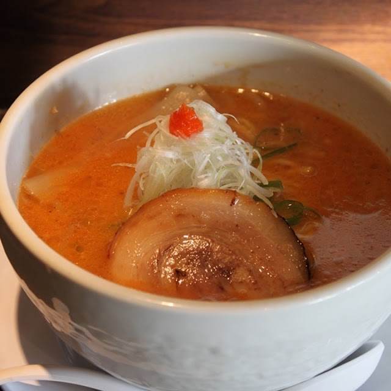
| 営業時間 | 火・水・木・金・土 11:30〜15:00, 18:00〜21:00 ／ 日 11:30〜15:00 |
|---|---|
| 定休日 | 月曜 |
| 住所 | 福井県福井市文京５丁目１３−３８ |
| 予約 | 要確認 — ☎ 090-2371-0095 ／ 公式サイト |
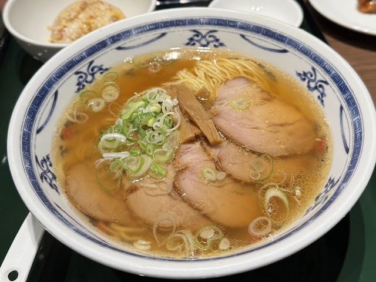
| 営業時間 | 月・火・水・木・金 11:00〜15:00, 17:00〜21:00 ／ 土・日 11:00〜21:00 |
|---|---|
| 定休日 | なし(要最終確認) |
| 住所 | 福井県福井市つくも１丁目５−２８ |
| 予約 | 可 — ☎ 0776-36-3536 ／ 公式サイト |
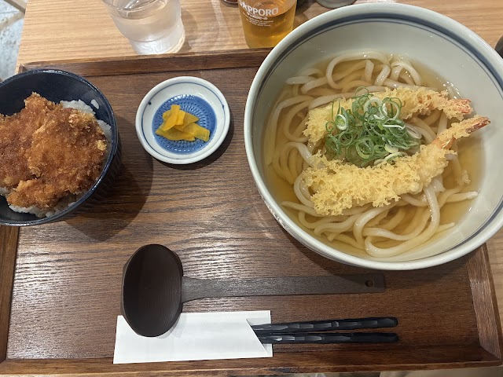
| 営業時間 | 月・水・金 11:00〜20:00 ／ 火・木 11:00〜15:00 ／ 土 11:00〜19:00 |
|---|---|
| 定休日 | 日曜 |
| 住所 | 福井県福井市問屋町４丁目１１７ |
| 予約 | 要確認 — ☎ 0776-23-2973 |
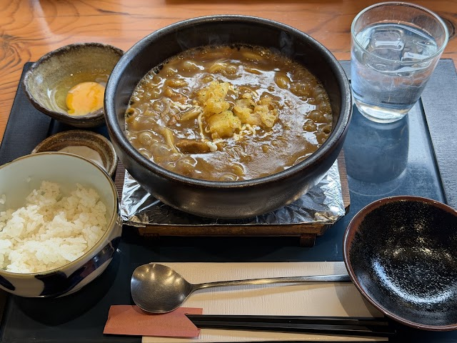
| 営業時間 | 月・火・木・金・土・日 11:00〜15:00, 17:00〜21:00 |
|---|---|
| 定休日 | 水曜 |
| 住所 | 福井県福井市新田塚１丁目２５−１ |
| 予約 | 可 — ☎ 0776-26-1175 ／ 公式サイト |
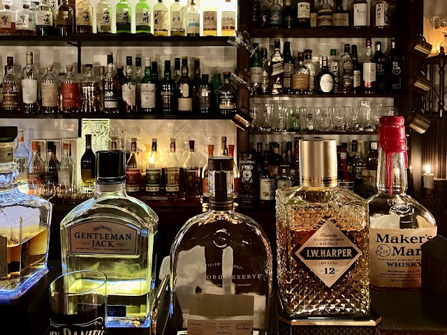
| 営業時間 | 18:00～23:00（金・土は～24:00） |
|---|---|
| 定休日 | 日曜・月曜、12/29～1/3 |
| 住所 | 福井県福井市順化２丁目７−１６ |
| 予約 | 可 |
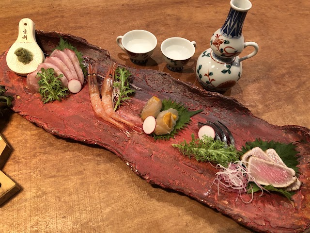
| 営業時間 | 月・火・水・木・金・土 17:30〜23:30 |
|---|---|
| 定休日 | 日曜 |
| 住所 | 福井県福井市順化１丁目１６−１５ |
| 予約 | 可 — ☎ 0776-27-0076 |
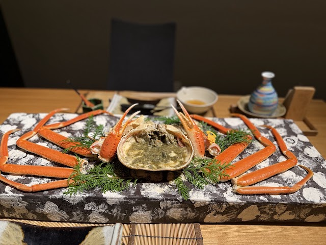
| 営業時間 | 月・火・水・木・金・土 17:30〜0:00 |
|---|---|
| 定休日 | 日曜 |
| 住所 | 福井県福井市大手２丁目７−２３ |
| 予約 | 可 — ☎ 0776-25-0088 ／ 公式サイト |
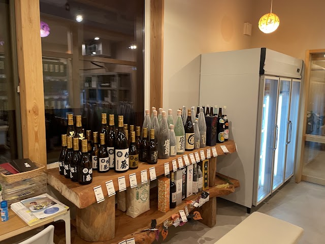
| 営業時間 | 月・火・水・木・金・土 10:00〜21:00 |
|---|---|
| 定休日 | 日曜 |
| 住所 | 福井県福井市栄町１２−４ |
| 予約 | 要確認 — ☎ 0776-56-0102 ／ 公式サイト |
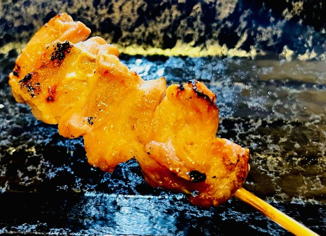
| 営業時間 | 月・火・水・木・金・土 17:00〜23:00 |
|---|---|
| 定休日 | 日曜 |
| 住所 | 福井県福井市中央３丁目２−２ １CDIビル 1階 |
| 予約 | 可 — ☎ 0776-28-0322 |
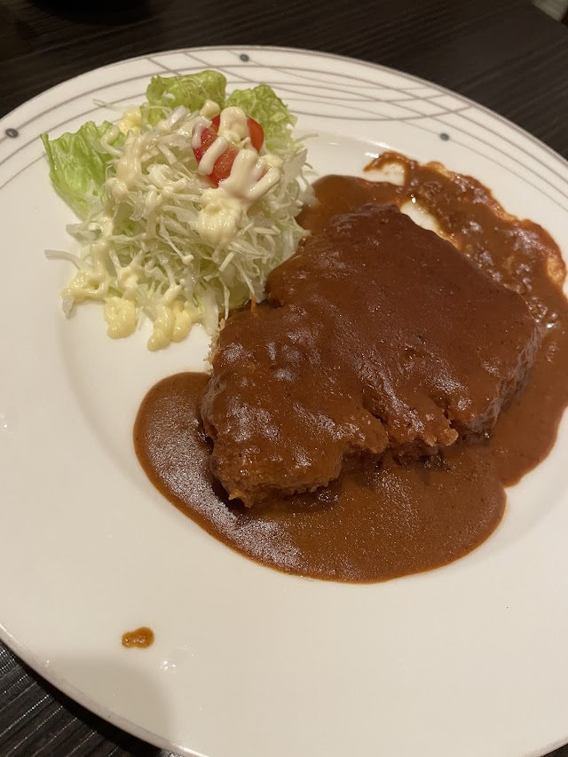
| 営業時間 | 火・水・木・金・土・日 17:30〜23:30 |
|---|---|
| 定休日 | 月曜 |
| 住所 | 福井県福井市順化２丁目２０−１８ コジマビル １Ｆ |
| 予約 | 可 — ☎ 0776-21-8710 ／ 公式サイト |
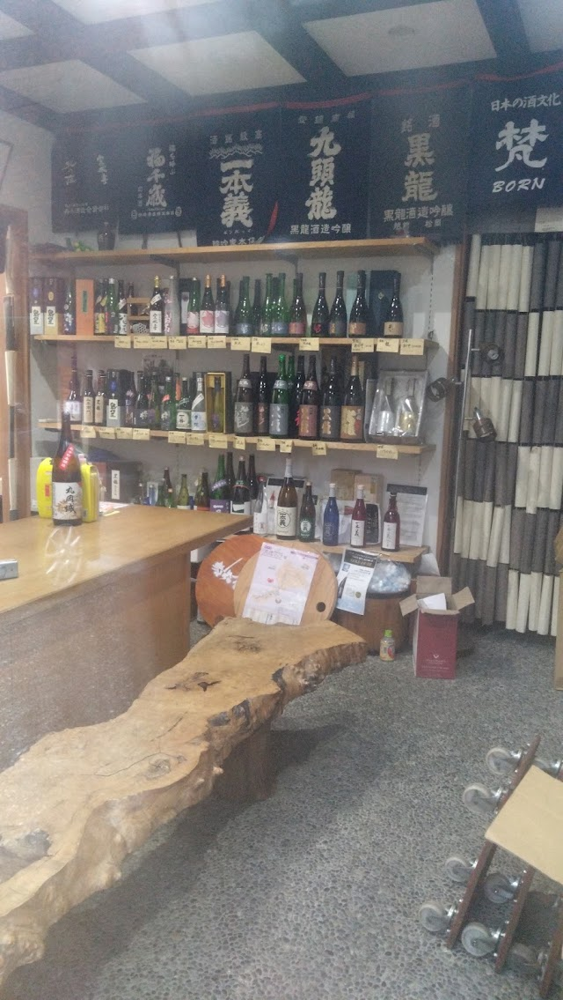
| 営業時間 | 月・火・水・木・金・土 9:30〜19:00 |
|---|---|
| 定休日 | 日曜 |
| 住所 | 福井県福井市中央３丁目３−１５ |
| 予約 | 要確認 — ☎ 0776-21-4632 |
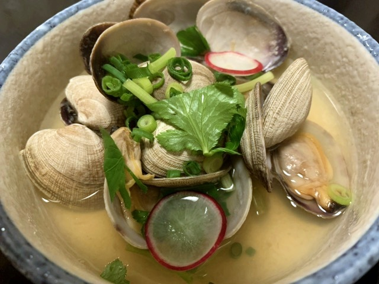
| 営業時間 | 月・火・水・木・金・土 17:00〜23:00 |
|---|---|
| 定休日 | 日曜 |
| 住所 | 福井県福井市順化２丁目２０−９ |
| 予約 | 可 — ☎ 0776-21-0053 |
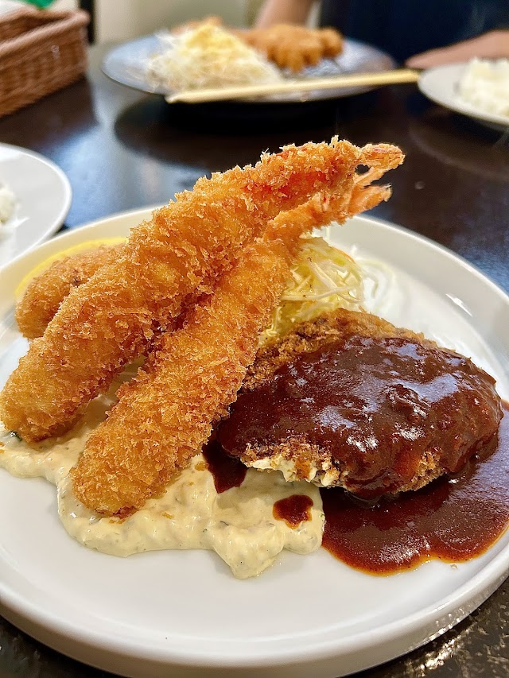
| 営業時間 | 月・火・水・土 11:30〜14:00, 18:00〜21:30 ／ 木・金 11:30〜14:00, 18:00〜22:00 |
|---|---|
| 定休日 | 日曜 |
| 住所 | 福井県福井市大手３丁目５−１８ |
| 予約 | 可 — ☎ 0776-28-3234 ／ 公式サイト |
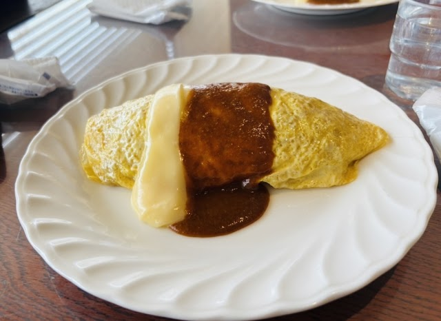
| 営業時間 | 月・火・水・金・土・日 11:00〜14:30, 17:00〜21:00 |
|---|---|
| 定休日 | 木曜 |
| 住所 | 福井県福井市志比口２丁目２０−２２ レストランブルドック |
| 予約 | 可 — ☎ 0776-54-3438 |
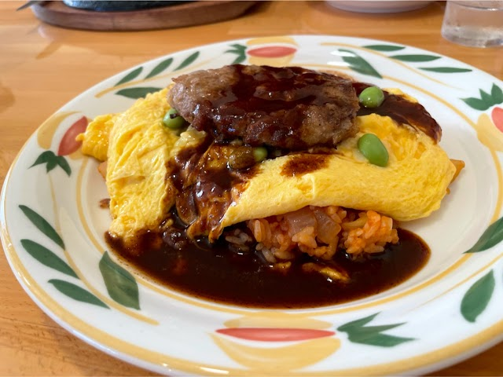
| 営業時間 | 火・水・木・金・土・日 11:00〜14:30, 17:00〜19:30 |
|---|---|
| 定休日 | 月曜 |
| 住所 | 福井県福井市羽水３丁目１０４ |
| 予約 | 可 — ☎ 0776-34-1788 ／ 公式サイト |
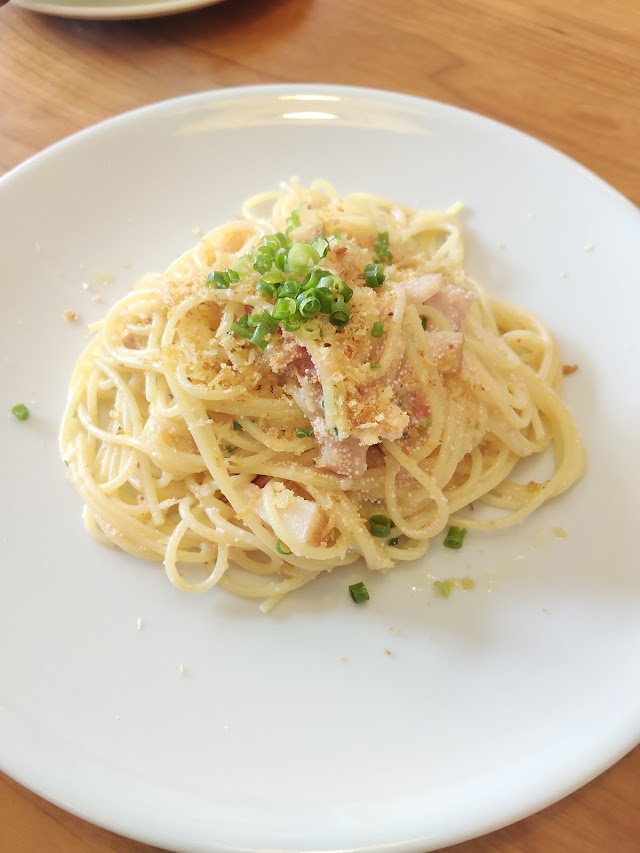
| 営業時間 | 火・水・木・金・土・日 11:30〜14:00, 17:30〜21:30 |
|---|---|
| 定休日 | 月曜 |
| 住所 | 福井県福井市中央２丁目２−１ パラッツォ.イ 1階 |
| 予約 | 可 — ☎ 0776-23-0617 ／ 公式サイト |
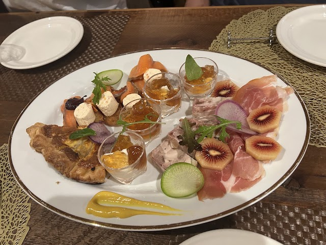
| 営業時間 | 火・水・木・金・土・日 12:00〜14:30, 18:00〜23:00 |
|---|---|
| 定休日 | 月曜 |
| 住所 | 福井県福井市水越１丁目８０３ |
| 予約 | 可 — ☎ 0776-50-2276 |
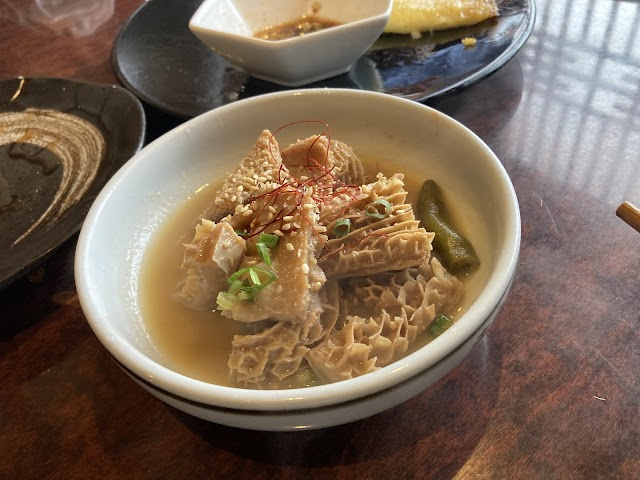
| 営業時間 | 月・水・木・金・土・日 11:30〜14:00, 17:00〜22:00 |
|---|---|
| 定休日 | 火曜 |
| 住所 | 福井県福井市開発３丁目２５０９ |
| 予約 | 可 — ☎ 0776-53-4040 ／ 公式サイト |
| 営業時間 | 月・水・木・金・土・日 9:00〜18:30 |
|---|---|
| 定休日 | 火曜 |
| 住所 | 福井県福井市中央１丁目２１−２４ |
| 予約 | 要確認 — ☎ 0120-224-354 ／ 公式サイト |
| 営業時間 | 月・木・金・土・日 7:00〜18:00 |
|---|---|
| 定休日 | 火・水曜 |
| 住所 | 福井県福井市経田２丁目４０６ |
| 予約 | 要確認 — ☎ 0776-23-2399 ／ 公式サイト |
| 営業時間 | 火・水・木・金・土 9:30〜18:00 |
|---|---|
| 定休日 | 月・日曜 |
| 住所 | 福井県鯖江市旭町２丁目３−２０ |
| 予約 | 要確認 — ☎ 0778-51-0502 ／ 公式サイト |
| 営業時間 | 月・火・水・木・金・土・日 9:00〜15:30 |
|---|---|
| 定休日 | なし(要最終確認) |
| 住所 | 福井県福井市板垣１丁目２０７ |
| 予約 | 可 — ☎ 0776-35-5588 ／ 公式サイト |
| 営業時間 | 月 12:00〜17:00 ／ 火・金 12:00〜18:00 ／ 土・日 10:00〜15:00 |
|---|---|
| 定休日 | 水・木曜 |
| 住所 | 福井県福井市上野本町１丁目２０１９ |
| 予約 | 要確認 — ☎ 090-7749-3232 ／ 公式サイト |
| 営業時間 | 月・火・日 11:00〜17:00 ／ 水 13:00〜17:00 |
|---|---|
| 定休日 | 木・金・土曜 |
| 住所 | 福井県福井市町屋３丁目９−１０ |
| 予約 | 要確認 — 公式サイト |
本ガイドは個人利用目的で作成。掲載情報は2026年8月時点の調査に基づく。写真出典: Google Maps投稿写真(©各投稿者/Google)。